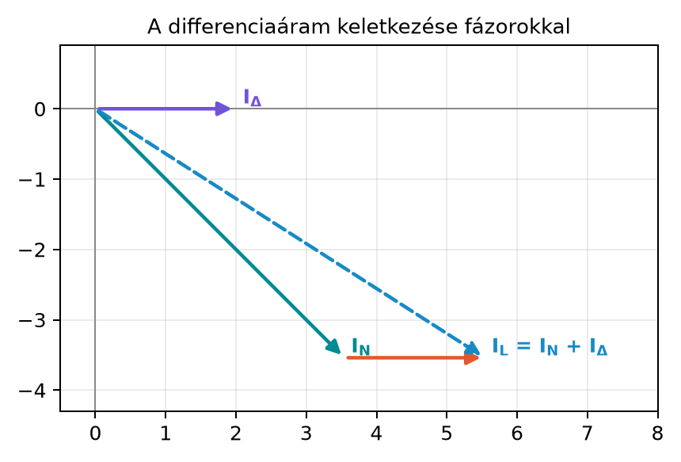
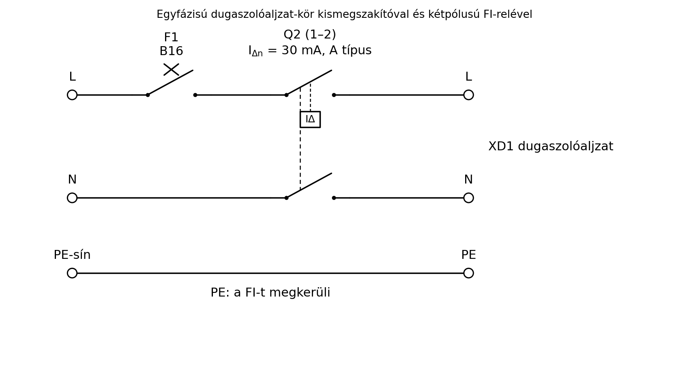
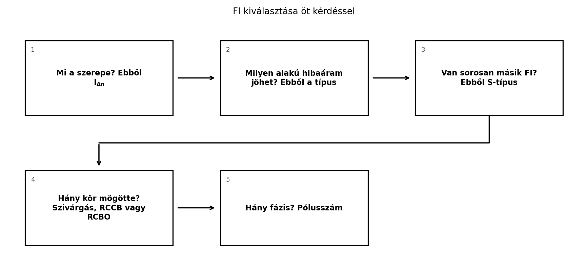
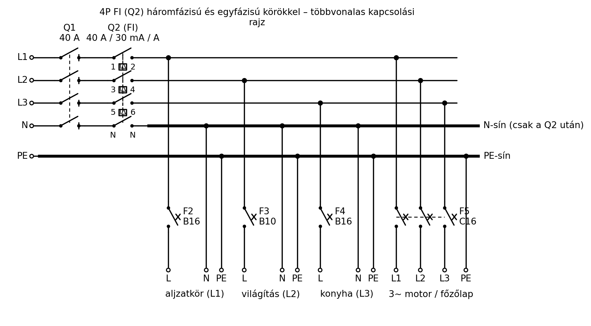
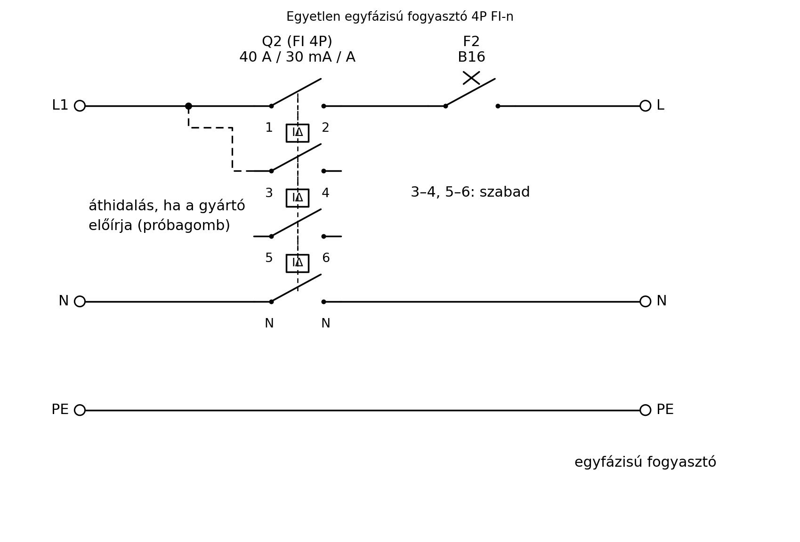

Statikus változat (mint a PDF-ben)
Egy lakásfelújításon a megrendelő azt kérdezi: „Miért kell ez az FI-relé a fürdőszobai mosógép elé? Nem elég a kismegszakító?” A válasz nem egyszerű: a kismegszakító túláram és zárlat ellen véd, de akkor is üzemel, ha például a fázisvezető sérülése miatt a mosógép fémházát megérintő személyen át áram folyik a föld felé. Ezt a hibát differenciaáram okozza, és erre való az áram-védőkapcsoló. Ebben az alfejezetben megismered a működését, a típusait, az alkalmazási szabályait, valamint azt, hogyan ellenőrizheted a próbagombbal és méréssel.
Képzelj el egy egyfázisú áramkört, amelyben egy fázisvezető (L) és egy nullavezető (N) viszi az áramot a fogyasztóhoz. Normál üzemben az L-en folyó áram ugyanakkora, mint az N-en visszafolyó áram, csak az irányuk ellentétes. Ha a készülék fémházát feszültség éri – például megsérül a szigetelés, és a fázisvezető hozzáér a fémházhoz –, akkor az áram egy része a védővezetőn (PE) vagy a testen, illetve az emberi testen keresztül folyik a föld felé. Ezáltal az L-ben folyó áram nagyobb lesz, mint az N-ben visszafolyó áram. A két áram közötti különbséget nevezzük differenciaáramnak, és ez az áram-védőkapcsoló jelzését szolgáltatja.

Az ábrán a fázisáram vektora a nullavezetőn visszatérő vektorából és a hibahelyen át a PE/föld felé folyó kis differenciaáramból () tevődik össze: . Ép áramkörben , a különbség nulla; hiba esetén a különbség jelenik meg a Σ-áramváltóban.
Definíció. Differenciaáram. Egy áramkörben a fázisvezetők és a nullavezető eredő áramának vektori összege:
Egészséges áramkörben ez az összeg nulla, mert a fázisokon folyó áramok a nullavezetőn visszafolynak, és a Kirchhoff csomóponti törvény értelmében a vektori összeg zérus. Ha bárhol hibaáram folyik a védővezető vagy a föld felé, ez az összeg nem nulla, és a különbség jelzi a hibát.
Definíció. Áram-védőkapcsoló (FI-relé, RCD). Olyan kapcsolókészülék, amely az áramkör differenciaáramát folyamatosan méri, és ha az meghaladja a beállított névleges hibaáramot (), az áramkört megszakítja.
A működés elve. Az FI-relé központi eleme a Σ-áramváltó (szumma áramváltó). Ez egy gyűrű alakú mágneses mag, amelyen a védendő áramkör összes fázis- és nullavezetője egyszer át van fűzve. A védővezeték (PE) nem megy át rajta, mert azon normál üzemben nem folyik áram. Ha a fázis és a nulla áramok vektori összege nulla, a magban a mágneses fluxus nulla, és a szekunder tekercsben nincs feszültség. Hiba esetén a differenciaáram a magban fluxust hoz létre, ami a szekunder tekercsben feszültséget indukál. Ez a feszültség a kioldórelét működteti, amely mechanikusan megnyitja az érintkezőket, és leválasztja az áramkört.
Az ábra bal oldalán ép áramkör látható: az L-en befolyó és az N-en visszafolyó 10,0 A fluxusa kioltja egymást. A jobb oldalon testzárlat van (az 1. feladat adataival): az L-en 10,2 A folyik, az N-en csak 10,0 A tér vissza, a 200 mA különbség eredő fluxust és a szekunder tekercsben feszültséget hoz létre, a kioldórelé bont. Alul a kioldási tartomány: (15 mA) alatt a FI nem oldhat ki, 15 és 30 mA között kioldhat, felett ki kell oldania. A HTML-kiadásban a hibaáram csúszkával állítható, és kipróbálható a hibás bekötés is: ha a FI után az N és a PE össze van kötve, a hibaáram egy része az N-en a Σ-magon át tér vissza, és a FI kisebb különbséget érzékel.
A készülék felépítése. Az elv mögött kevés, jól azonosítható alkatrész dolgozik. Az alábbi ábrán egy kétpólusú (fázis + N) FI-relé belseje és előlapja látható, a részek számozva: felül és alul az 1 kapcsok (1 = L be, 2 = L ki, valamint N be és N ki), a 2 főérintkezők a fázist és a nullát is bontják, a 3 szabadkioldású kapcsolózárat a 4 kioldórelé oldja ki. Az 5 Σ-áramváltó gyűrűmagján az L és az N egyszer van átfűzve, a 6 szekunder tekercs táplálja a kioldórelét. A 7 próbagomb (T) egy próbaellenálláson (R) át a kimenő oldali fázist a bemenő oldali nullával köti össze, így a próbaáram a magot csak az egyik vezetőn járja át – ez mesterséges differenciaáram. A 8 kapcsolókar és a 9 adattábla (névleges áram, , típusjel) az előlapon van.

Figyeld meg, hogy a PE nem megy át a készüléken, és hogy a próbagomb áramköre feszültséget igényel: ezért nem old ki a próbagomb kikapcsolt vagy törpefeszültségről táplált FI-n. Az adattábla értékei a rajzon csak példák; a valódi adatot mindig a készülékről olvasd le. A HTML-kiadásban a részekre mutatva megjelenik a nevük és a szerepük.
Fontos tulajdonság. Az FI-relé nem véd túláram vagy zárlat ellen, ezért mindig túláramvédelmi eszközzel (biztosítóval vagy kismegszakítóval) kell együtt alkalmazni. Vannak kombinált készülékek is: a kismegszakítóval egybeépített áram-védőkapcsoló (RCBO), amely mind a túláramot, mind a differenciaáramot kezeli.
A FI csak azt látja, ha a rajta átfűzött vezetőkön befolyó és visszafolyó áram nem egyenlő. Ezért vannak veszélyes helyzetek, amelyekben nem old:

Biztonsági korlát. A FI nem teszi biztonságossá a feszültség alatti munkát. Feszültség alatti munka ebben a tananyagban tilos; a munka csak az öt biztonsági szabály (leválasztás, visszakapcsolás elleni biztosítás, a feszültségmentesség ellenőrzése, földelés-rövidre zárás, a közeli feszültség alatti részek elkerítése) után kezdhető.
Az FI-relék legfontosabb jellemzője a névleges hibaáram (). Ez az a differenciaáram-érték, amelynél a készülék megszakít. A gyakorlatban három érték a leggyakoribb:
30 mA: kiegészítő védelem, amely közvetlen érintés esetén is csökkenti a halálos áramütés kockázatát – ha az áram a föld felé (a FI-t megkerülve) folyik. Tanulási értékként kötelező: a laikusok által használt, legfeljebb 32 A-es dugaszolóaljzat-körök, a szabadban használt, legfeljebb 32 A-es hordozható készülékek köre, a lakások világítási végáramkörei és a különleges helyiségek (fürdőszoba stb.) körei (ellenőrizendő: MSZ HD 60364-4-41 és a 7-es részek aktuális kiadása). A lakossági végáramkörökben a 30 mA a leggyakoribb érték; egyedi készülékkörökre 10 mA-es kivitel is létezik.
100 mA: főként tűzvédelemre használják, ahol a kisebb hibákból származó tartós szivárgóáram melegedést és tüzet okozhat. Gyakran az elosztókban, nagyobb szakaszokon alkalmazzák, ahol a 30 mA túl érzékeny lenne a természetes szivárgóáramok miatt. A 100 mA nem ad kiegészítő védelmet közvetlen érintés ellen, ezért azokban a végáramkörökben, ahol a 30 mA-es kiegészítő védelem kötelező (aljzatkörök, fürdőszoba stb.), nem elég; más körökben hibavédelemként (pl. TT-ben) alkalmazható, ha a feltétele teljesül.
300 mA: az elosztói szintű tűzvédelem és nagyobb berendezések hibajelzése. Ritka a lakossági gyakorlatban, inkább ipari vagy közületi főelosztókban találkozunk vele.
A fentieken kívül léteznek nagyobb, 500 mA vagy 1 A névleges hibaáramú készülékek is, de ezeket a könyvben nem tárgyaljuk. A szelektivitás biztosítására használják az S típusú (szelektív) FI-reléket: ezek rövid késleltetéssel oldanak, hogy a mögöttük lévő, gyorsabb FI-relé előbb szakítson, így csak a hibás áramkör marad feszültségmentes.
A differenciaáram jellege szerint az FI-relék különböző típusai léteznek. A típus betűjele azt mutatja meg, milyen alakú hibaáram esetén működik a készülék.
AC típus: csak szinuszos váltakozó áramú differenciaáramra érzékeny. Ez a legrégebbi típus, ma már csak olyan helyeken alkalmazható, ahol nincs elektronikus fogyasztó (ellenőrizendő: a mai előírások). Például tisztán fűtőbetétes készülékeknél működik, de elektronikus tápegység, LED, számítógép vagy frekvenciaváltó mellett nem megbízható.
A típus: a szinuszos váltakozó áram mellett lüktető egyenáramú differenciaáramra is kiold. A lüktető egyenáram olyan, amikor az áram iránya nem váltakozik, hanem csak a nagysága változik időben (pl. félvezetős áramkörök, dimmerek, egyenirányítók). A modern háztartási és ipari fogyasztók nagy része ilyen hibaáramot generálhat, ezért ma már általában A típus ajánlott.
F típus: az A típusnál tovább: érzékeli a nagyfrekvenciás szinuszos és lüktető hibaáramokat is, és rövid késleltetéssel rendelkezik, ami csökkenti a téves kioldást olyan környezetben, ahol frekvenciaváltó, szivattyúk, mosógépek inverteres motorjai üzemelnek.
B típus: az előzőeken túl egyenáramú és nagyfrekvenciás hibaáramokra is működik. Ezt a típust használják például frekvenciaváltós hajtásoknál, napelemes rendszereknél, akkumulátortöltőknél, ahol a hibaáram tartalmazhat egyenáramú összetevőt.
A gyakorlatban: ha egy mosógépben inverteres, frekvenciaváltós motor dolgozik, az AC és az A típusú FI-relé a nagyfrekvenciás szivárgóáramra tévesen oldhat, a sima egyenáramú hibaáramra pedig nem old le; egyfázisú frekvenciaváltós készüléknél F típus ajánlott (a gyártó előírása szerint), háromfázisú frekvenciaváltónál, töltőnél, napelemes invertereknél (ha a gyártó előírja) B típus szükséges (ellenőrizendő: MSZ EN 62423 és a hajtás gyártói előírása). Az F típus a sima egyenáramú hibaáramot nem érzékeli. A frekvenciaváltós hajtások a készülékükben nagyfrekvenciás zajt és kapacitív szivárgóáramot generálnak, amely az AC és A típusnál téves kioldáshoz vezethet.

A kapcsolási rajzon látható, hogy a fázisvezető (L) és a nullavezető (N) együtt halad át a kétpólusú FI-relén (az L az F1 kismegszakítón is), míg a védővezető (PE) a PE-sínről a FI-t megkerülve, közvetlenül a dugaszolóaljzat védőérintkezőjére jut. A bekötésnél ügyelni kell a bemeneti és kimeneti oldal jelölésére.
Egy konkrét körhöz öt kérdést teszel fel egymás után:

| Kör / fogyasztó | Típus | Kivitel | |
|---|---|---|---|
| lakás aljzatkörei | A | 30 mA | 2P vagy 4P csoport |
| fürdőszoba | A | 30 mA | 2P vagy RCBO |
| inverteres mosógép | F | 30 mA | RCBO |
| indukciós főzőlap | A (gyártó szerint) | 30 mA | 2P vagy 4P |
| kerti, kültéri aljzat | A | 30 mA | RCBO, IP-védett aljzat |
| 3~ frekvenciaváltós szivattyú | B (ellenőrizendő) | 30 vagy 300 mA a szerep szerint | 4P |
| elektromosautó-töltő | B, vagy A + 6 mA DC-érzékelés (ellenőrizendő: gyártó, MSZ HD 60364-7-722) | 30 mA | töltőpontonként külön |
| napelemes inverter köre | a gyártó szerint, esetleg B (ellenőrizendő: MSZ HD 60364-7-712) | a terv szerint | 2P vagy 4P |
| elosztás eleje, szelektív | S (típus a mögöttes körök szerint) | 100 vagy 300 mA | 4P RCCB |
A lakáselosztókban többnyire négypólusú (4P) FI-relé védi a körök egy csoportját; az egyvonalas rajz ezt egyetlen jellel mutatja, a szereléshez viszont a többvonalas kép kell: melyik pólusra melyik vezető kerül, honnan kapják a körök az N-t, és hova megy a PE. Az alábbi rajzon a Q1 4P főkapcsoló után a Q2 4P FI-relé következik (kapcsai 1–2, 3–4, 5–6 a fázisokra, N–N a nullára), mögötte három egyfázisú és egy háromfázisú kör.

Kövesd végig az F2 aljzatkört: L1 → Q1 → Q2 1–2 → F2 → az aljzat L kapcsa; az N a Q2 N–N pólusán át a Q2 utáni N-sínre, onnan az aljzat N kapcsára; a PE a PE-sínről közvetlenül. Így a kör L- és N-árama is átmegy a FI Σ-áramváltóján, a PE viszont nem. Az egyfázisú körök a fázisok között egyenletesen oszlanak el (L1, L2, L3; lásd az Elosztó szerelése, kapcsolási rajz és feliratozás alfejezetet), az F5 háromfázisú kör N nélkül csatlakozik.
Ha egy 4P FI mögött egyetlen egyfázisú fogyasztó van, a bekötés így néz ki:

Szabály. A 4P FI bekötésekor: 1. Az N mindig a FI N–N pólusán megy át; a FI utáni N-sín csak e FI mögötti körök N-jét gyűjti (más FI vagy FI nélküli kör N-je nem kerülhet rá, különben a FI tévesen old vagy nem véd). 2. A bemenet és a kimenet jelölése (általában felül a táp, alul a terhelés) a gyártó szerint; a fázispólusok és az N-pólus helye típusonként eltér (az N lehet bal vagy jobb szélen). 3. A próbagomb belső ellenállása két meghatározott kapocs közé kapcsolódik (gyakran egy fázis és az N, vagy két fázis); ha az a pólus nincs feszültség alatt, a próbagomb nem old – ez nem a FI hibája (ellenőrizendő: a konkrét típus adatlapja). 4. A FI névleges árama legalább akkora legyen, mint az előtte lévő túláramvédelem névleges árama, vagy a gyártó által megengedett kombinációt kell alkalmazni (ellenőrizendő: gyártói koordinációs táblázat).
Egyetlen egyfázisú fogyasztóhoz a 2P FI a jobb választás: kisebb, olcsóbb, és nincs próbagomb-csapda.
Szabvány. Az áram-védőkapcsolókra vonatkozó részletes követelményeket a termékszabványok tartalmazzák. A beépített túláramvédelem nélküli áram-védőkapcsolókra (RCCB) az MSZ EN 61008, a túláramvédelemmel kombinált kivitelre (RCBO) az MSZ EN 61009, az F és B típusra az MSZ EN 62423 vonatkozik (ellenőrizendő: aktuális kiadások és módosítások). A kisfeszültségű berendezések hibavédelmére az MSZ HD 60364-4-41, a készülékek kiválasztására és telepítésére az MSZ HD 60364-5-53 ad előírásokat (ellenőrizendő: aktuális szakaszok). A szabványok pontos időértékei és alkalmazási feltételei a kiadás előtt ellenőrizendők; az itt közölt értékek tanulási példák.
Tünet: Egy családi ház új konyhájában a beépített inverteres mosogatógép indításakor a 30 mA-es FI-relé rendszeresen leold, pedig a készülék egyébként jól működik, és a kismegszakító nem kapcsol le.
Hipotézis: Túláram vagy zárlat nincs, mert a kismegszakító nem old. A jelenség differenciaáramra utal. A szerelő mérésekkel ellenőrzi a szivárgóáramot: a lakatfogóval átfogott fázis- és nullavezetőn mért állandó differenciaáram 4 mA körüli volt, de a gép indításakor néhány ms-ra 40 mA-es csúcs is megjelent.
Ok: A mosogatógép frekvenciaváltós szivattyúja nagyfrekvenciás szivárgóáramot generál, amely indításkor rövid csúcsot okoz, és erre az AC típusú FI-relé kiold. A lüktető vagy vegyes frekvenciájú hibaáramot az AC típus ráadásul nem is érzékelné, ezért is cserélendő.
Javítás: A szerelő kicserélte az AC típusú FI-relét egy F típusú FI-relére (vagy a gyártó ajánlása szerint B típusra). A csere után a téves kioldás megszűnt: az állandó szivárgás 4 mA maradt (jóval a alatt), és az F típus az indítási csúcsra nem old ki.
Megelőzés: Frekvenciaváltós vagy inverteres fogyasztókkal rendelkező áramkörökben mindig a gyártói ajánlásnak és a szabványnak megfelelő FI-típust kell választani, és a rendszer szivárgóáramát ellenőrizni kell.
Hiba. A FI-relé után a nulla és a védővezető (PE) közé bekötés kerül, például egy régi TN-C rendszerben a nullavezetőt használják védővezetőként is. Ekkor a FI-relé mögött a nulla és a PE gyakorlatilag össze van kötve, így a differenciaáram egy része a nullavezetőn visszafolyik, és a FI-relé tévesen leold, vagy nem old le hiba esetén. A helyes megoldás: a FI-relé mögött külön N és PE sín, a TN-C rendszerben a FI-relé előtt kell a PEN-t szétválasztani.
Hiba. A FI-t megfelelő túláramvédelem nélkül építik be, vagy a FI névleges áramát kisebbre választják, mint az utána lévő kismegszakítók összegéből adódó tartós terhelés. Helyes: a FI-t a gyártó által megadott előtét-túláramvédelemmel kell védeni; a sorrend (kismegszakító → FI, vagy FI → kismegszakítók) mindkét módon szabályos lehet (ellenőrizendő: gyártói adatlap, MSZ EN 61008). Mindkét esetben igaz, hogy a FI-relé mögötti nullavezetőt nem szabad a PE-vel összekötni, és a FI-relé nulla kimenete nem terhelhető más áramkör nullavezetőjével, mint ami a fázisán megy.
Hiba. A próbagombot soha nem nyomják meg. Ha a FI-relé mechanikusan elakadt vagy a kioldórelé hibás, a próbagomb tesztje felfedi ezt. A rendszeres ellenőrzés elmulasztása azt eredményezi, hogy hiba esetén a FI-relé nem old le, és az áramütéses baleset bekövetkezik.
Hiba. Túl nagy szivárgóáram miatt 30 mA-es FI-relét választanak olyan körre, ahol a természetes szivárgóáram meghaladja a 30 mA-t. Ilyenkor a FI-relé folyamatosan old. A megoldás: a szivárgóáram forrásának megkeresése és megszüntetése (szigetelésmérés, hibás készülék javítása), a körök szétbontása több 30 mA-es FI vagy RCBO közé. Nagyobb névleges hibaáramú FI csak olyan körön választható, ahol a 30 mA-es kiegészítő védelem nem kötelező, és a hibavédelem feltétele teljesül (ellenőrizendő: MSZ HD 60364-4-41).
Az első két hiba a lakáselosztóban szemrevételezéssel is felismerhető. Az alábbi ábra egyfázisú példán mutatja a helyes bekötést és a két leggyakoribb hibás változatot: (a) a FI-n átmenő N a FI utáni N-sínre fut, és a védett körök nullája csak innen indulhat; (b) a 2. kör nullája a FI előtti N-re került; (c) a FI utáni N-sín és a PE-sín össze van kötve.

A (b) esetben a 2. kör üzemi árama az L-en átmegy a Σ-magon, de az N-en a magot megkerülve tér vissza, ezért a FI már az első bekapcsolásnál kiold – ez nem „érzékeny FI”, hanem bekötési hiba. A (c) esetben a hiba alattomosabb: a FI hol tévesen old, hol hibánál sem old ki. Ha több FI-csoport van, minden csoportnak külön N-sín kell. A HTML-kiadásban a három nézet egyenként, magyarázattal jeleníthető meg.
Biztonsági korlát. A hibakeresést jogosult szakember végzi, tanulóként csak tanműhelyben, oktató felügyeletével gyakorold. Minden kapocsbontás és szigetelésmérés előtt teljesítsd az öt biztonsági szabályt. A differenciaáram mérése feszültség alatti mérés: csak zárt burkolat mellett vagy erre alkalmas mérőponton, lakatfogóval, felügyelettel végezhető.
Módszer (recept).
| Tünet | Valószínű ok | Ellenőrzés (előtte az öt szabály) | Javítás |
|---|---|---|---|
| bekapcsoláskor azonnal old, a gyanús körben nincs fogyasztó bekapcsolva | N–PE kapcsolat a FI után (alelosztó, aljzat, sérült kábel) | N–PE szigetelés leválasztott N-nel: közel 0 Ω | áthidalás megszüntetése, kábel javítása |
| mindig egy fogyasztó bekapcsolásakor old | a fogyasztó szigetelési hibája, vagy a kör N-je másik N-sínen / a FI előtti N-en | fogyasztó szigetelésmérése; az N nyomvonalának követése | készülékjavítás, illetve az N átkötése a saját N-sínre |
| másik csoport egyik körének bekapcsolásakor old | két FI-csoport közös vagy összekötött N-je | az N-sínek elkülönítésének ellenőrzése | csoportonként külön N-sín |
| időszakosan, nedves időben vagy éjjel old | nedvesedő kültéri doboz, fűtőbetét | szigetelésmérés szárazon és nedvesen, körönkénti differenciaáram | szerelvény vagy készülék cseréje (lásd a szakipari hibakeresési esetet) |
| zivatarkor old | túlfeszültség, a levezetett áram átmegy a FI-n | az SPD helye, a FI lökőáram-állósága | SPD a FI elé, ha a rendszer engedi; S-típusú vagy lökőáram-álló FI (ellenőrizendő) |
| sok kör egy FI mögött, „magától” old | az összegzett természetes szivárgás nagy | lakatfogóval mért alapszivárgás nagyobb, mint | körök szétosztása, RCBO |
| a próbagombra nem old | hibás FI, vagy a próbagomb pólusa nem kap feszültséget (4P FI egy fázissal) | feszültség a kapcsokon, adatlap, FI-vizsgáló | bekötés javítása vagy csere |
| próbagombra old, de a vizsgáló -nél nem old ki | hibás vagy elállítódott FI, rosszul beállított mérés | műszerbeállítás ellenőrzése, a mérés ismétlése | a FI cseréje |
A) eset – alelosztó, N–PE áthidalás.
B) eset – a nulla rossz sínen.
A hibás bekötés rajzon való felismerését a 12. feladat gyakoroltatja.
Gyakorlás: ennek az alfejezetnek a kidolgozott példái, gyakorlatai és megoldással ellátott feladatai az Összefoglaló feladatgyűjtemény villanyszerelő tanulóknak című kötet 21.4 szakaszában találhatók.
Az áram-védőkapcsoló (FI-relé, RCD) a fázis- és nullavezetők áramainak vektori összegét, a differenciaáramot méri a Σ-áramváltó segítségével. Normál üzemben ez az összeg nulla; hibánál a különbség nem nulla, és ha eléri a kioldási értéket (legkésőbb -nél), a készülék megszakítja az áramkört. A leggyakoribb érzékenységek: 30 mA (kiegészítő védelem, végáramkörök), 100 mA és 300 mA (tűzvédelem, elosztói szint), valamint S típusú késleltetett kivitel a szelektivitáshoz. A típusok – AC, A, F, B – a hibaáram jellegétől függnek; frekvenciaváltós körökben F vagy B típust kell használni. A FI-relé nem véd túláram ellen, ezért kismegszakítóval együtt alkalmazzuk. A próbagombot havonta ellenőrizni kell, a mérési ellenőrzést FI-vizsgálóval végezzük. A FI-relé mögött a nullavezetőt és a védővezetőt tilos összekötni. A mérési módszereket a Mérések II.: hurokimpedancia, zárlati áram, FI-vizsgálat alfejezetben tanuljuk meg, és az így kapott eredményeket a felülvizsgálati jegyzőkönyvben dokumentáljuk.
A szöveg a differenciaáram, a mágneses összegzés és a kioldási elv alapvető fizikai összefüggéseire épül, amelyek stabil tudásnak tekinthetők. A szabványi hivatkozások – MSZ EN 61008, MSZ EN 61009, MSZ HD 60364-4-41, MSZ HD 60364-5-53 – és a pontos kioldási idők, érzékenységek, típusbesorolások a kiadás előtt ellenőrizendők. A numerikus példák tanulási célt szolgálnak, nem tervezési előírások.